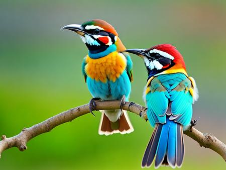

Welcome to our nature reserve, home to a diverse array of wildlife and beautiful landscapes. One of the most enchanting sights here is the majestic [Bird Species]. Known for its vibrant plumage and melodious song, the [Bird Species] can often be spotted perched high in the treetops or gliding gracefully through the air. These birds play a crucial role in the ecosystem, helping to control insect populations and disperse seeds. We invite you to explore our trails and experience the wonder of these magnificent creatures in their natural habitat.
